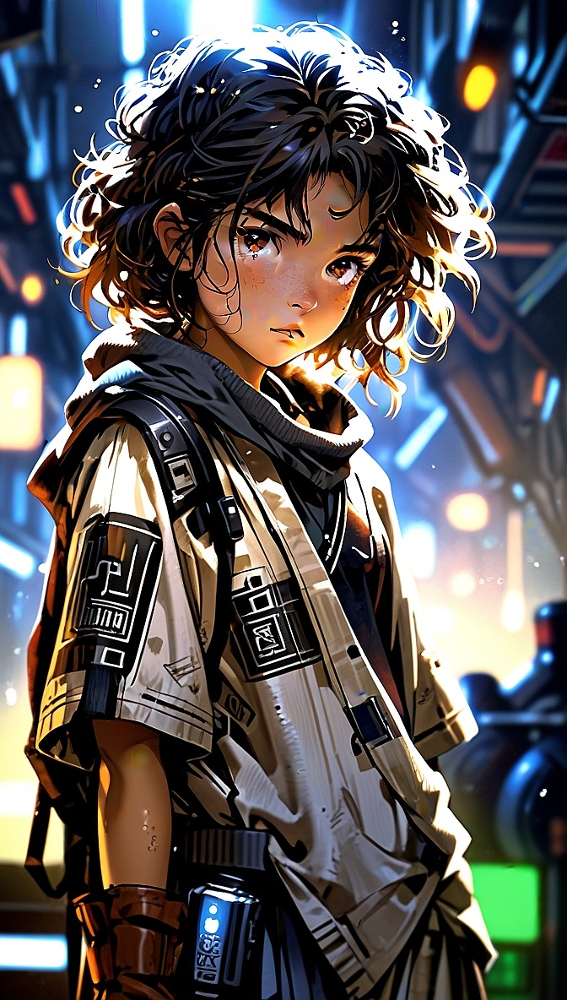
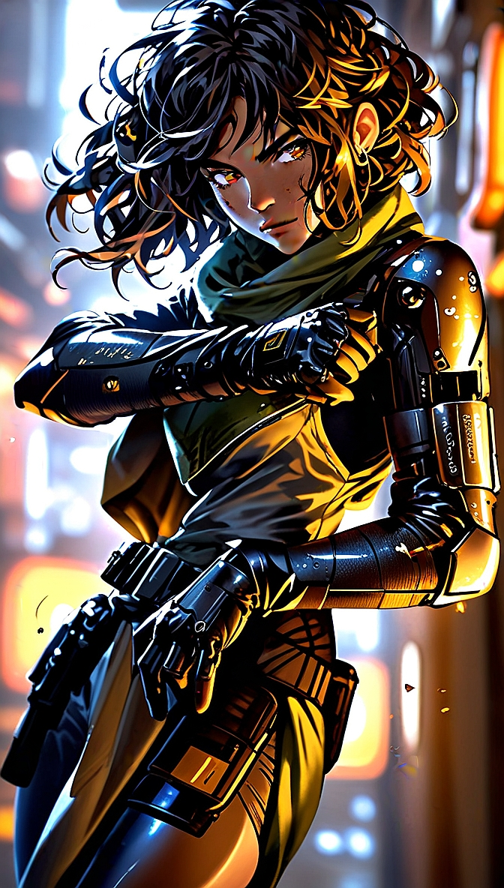
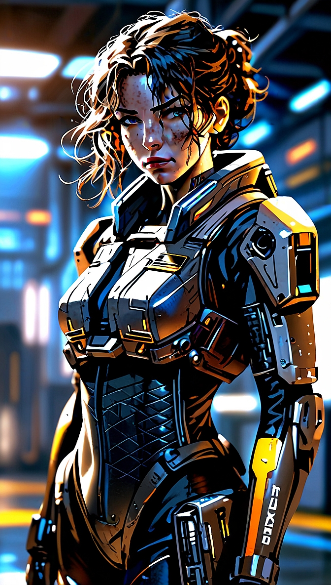
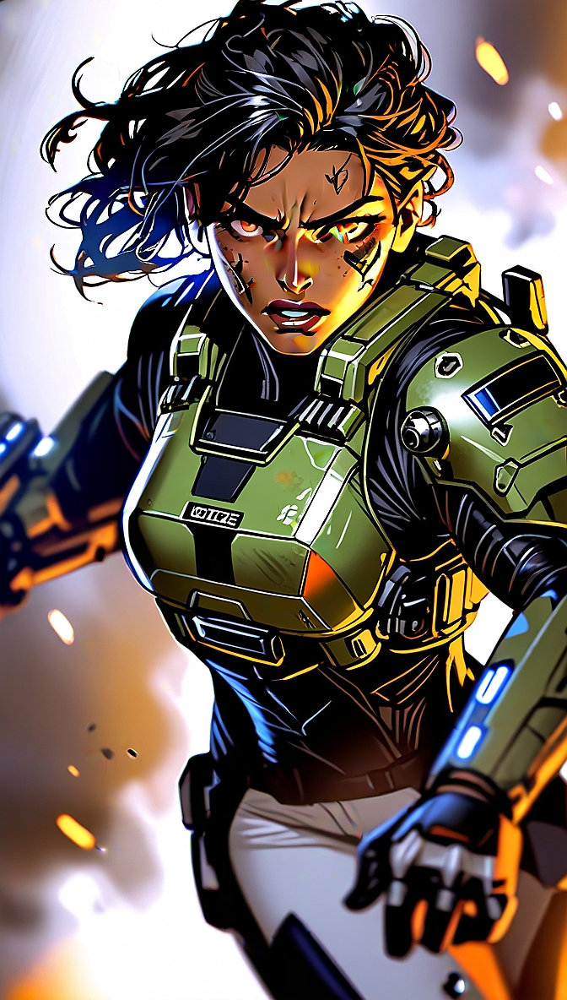

MEMBRI PHOENIX ELITE GROUP
FLORA FLOWERS
Infanzia - ERA I

3286 - Flora, La Figlia della Distruzione
Di Flora Flowers si conosce poco, ma quel poco basta a delineare un destino duro,
segnato dalla sopravvivenza.
Nata in un sistema distrutto dal passaggio di Archon
Delaine, rimase orfana in tenerissima età e fu costretta a crescere tra stenti, violenza
e necessità. Senza una famiglia e senza protezione, imparò presto che per vivere
bisognava rubare, arrangiarsi e colpire per primi.
Fin da bambina sviluppò un
carattere ruvido, impulsivo e combattivo, diventando una sopravvissuta nata nella rabbia
più che nella speranza. Le strade, i rifugi improvvisati e il continuo bisogno di
difendersi la temprarono fino a farne una ragazza incapace di piegarsi facilmente a
chiunque tentasse di dominarla.
Adolescenza - ERA II

3294 - Flora, La Ribelle di Delaine
Durante l’adolescenza, Flora emerse nella realtà sovversiva di Archon Delaine. In quel
mondo di paura, controllo e sopraffazione, maturò un odio profondo verso ogni
catena.
Decisa a spezzarle da sola, risolveva sempre tutto con i pugni. Questa
natura impulsiva la spinse fino a tentare di assassinare il Re dei Pirati.
L’impresa
fallì e Flora ebbe la peggio contro i suoi uomini, ma il gesto segnò la svolta della sua
vita.
Nel caos dell'attacco sferrato dall'Impero di Lavigny contro la Kumo Crew,
riuscì a intrufolarsi di nascosto su una nave nemica e a raggiungere la capitale
Achenar. Quella fuga dettata dal puro istinto di sopravvivenza le offrì finalmente una
seconda possibilità.
Adulto - ERA III

3297 - Flora, La Guerriera del PEG

3305 - Il Sacrificio di Stromgren Orbital
Dopo un breve periodo di prigionia imperiale, Flora riuscì a riscattarsi entrando nella
Marina Imperiale.
Fu lì che iniziò a incanalare la sua aggressività in qualcosa di utile, trasformandosi
in una soldatessa temibile e disciplinata, specializzata nel combattimento corpo a corpo
e nelle operazioni surface based.
La sua esperienza nei territori ostili e negli scontri ravvicinati la rese perfetta per
missioni ad altissimo rischio, dove servivano sangue freddo, riflessi rapidi e assoluta
determinazione.
Il suo ingresso nel Phoenix Elite Group rappresentò la vera consacrazione della sua
carriera.
All’interno del PEG, Flora divenne la specialista delle operazioni dirette:
infiltrazioni su terreno ostile, assalti a bordo di navi nemiche, neutralizzazione di
bersagli in spazi ristretti e azioni di contenimento nei momenti più caotici.
Era la membro del gruppo più impulsiva e aggressiva, ma anche una delle più
risolutive.
Non esitava mai quando c’era da colpire, proteggere o trattenere il nemico con la
forza.
Nel PEG trovò una nuova famiglia, anche se il suo destino rimase legato al
sacrificio.
Durante l’operazione di Stromgren Orbital, nel cuore del disastro di Baal, Flora si
offrì deliberatamente come ultima linea di difesa per permettere agli altri di
fuggire.
Combatté corpo a corpo contro le guardie imperiali, rallentando l’avanzata nemica fino
all’estremo sacrificio.
La sua morte trasformò Flora Flowers in una figura leggendaria del PEG: una guerriera
nata dalla miseria, forgiata dall’odio verso la tirannia e caduta da eroina per salvare
i suoi compagni.
La sua presenza, spesso silenziosa ma sempre minacciosa, dava al gruppo una risorsa
preziosa nelle situazioni in cui servivano decisione immediata e brutalità
controllata.
Nei combattimenti non cercava gloria né riconoscimento: per lei contava solo abbattere
il nemico, aprire un varco e garantire la sopravvivenza dei compagni.
Anche quando il rischio diventava insostenibile, Flora continuava ad avanzare, come se
ogni scontro fosse l’ultimo e andasse vinto senza esitazioni.
Flora Flowers resta così il simbolo della forza brutale, dell’istinto di sopravvivenza e
della lealtà assoluta verso chi considerava la sua vera famiglia.